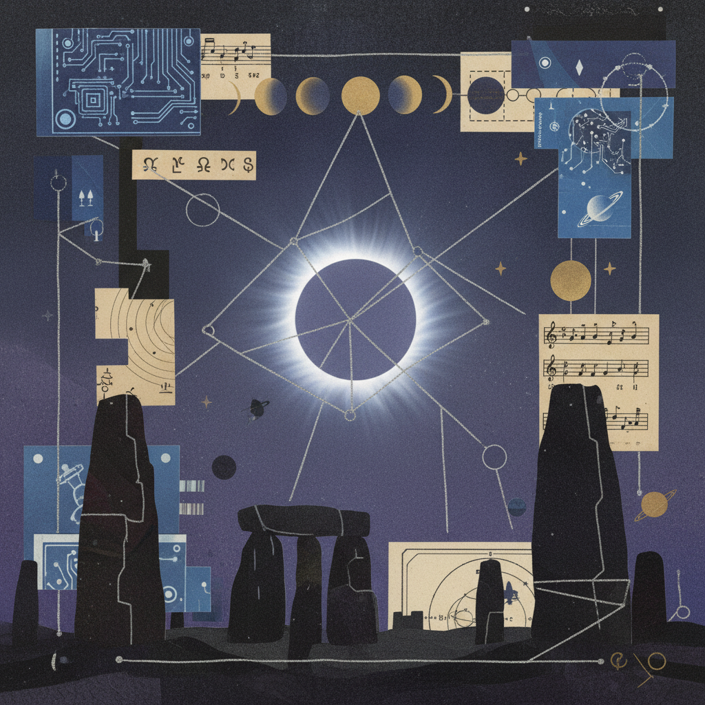
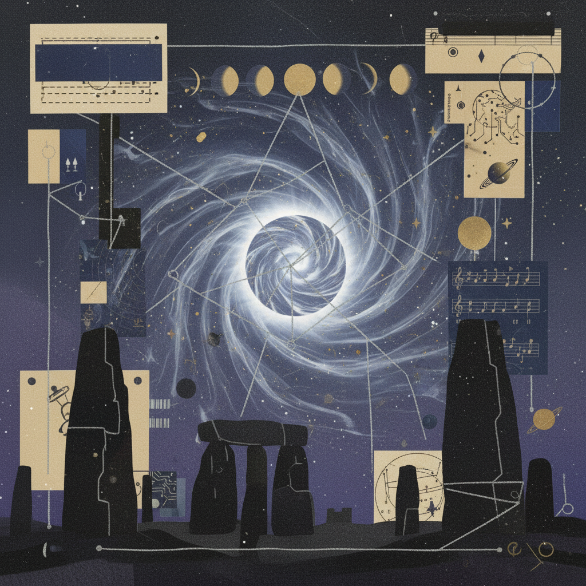
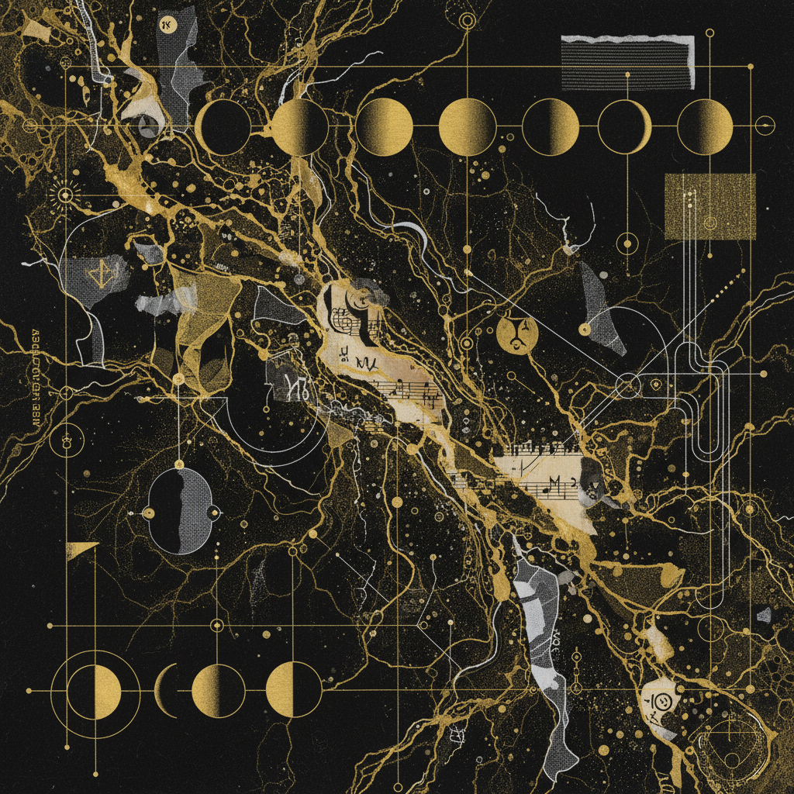

Eclipse Portal Special:
Virgo–Aries
A threshold crossing from the meticulous scrutiny of the digestive system to the raw, visceral initiation of the head. Releasing perfectionism for the bold leap of self-emergence.

The Digestive Anchor
Virgo’s focus on assimilation. What is the body refusing to break down? Release the obsession with purity to make room for fuel.
The Neural Spark
Aries’ initiation in the cranium. Transitioning from analysis paralysis to the singular, uninhibited act of the "I Am."
Eclipse Synthesis
The alchemy of the portal. Where perfection meets impulse. Transforming the critic into the pioneer.
Portal Rituals
Gut-Brain Aligment
Breaking the Grid

The Critic's Funeral
A meditation on burning the lists of things left undone to make space for things yet started.
"The transition from Virgo to Aries is not a walk, it is an eruption. One must digest their past to fuel their future."
